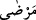
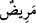

Sarhoşluk, kişi ile aklı arasına giren bir haldir. Çoğunlukla da içkiden kaynaklanır.
Bâzan aşktan, uyku, gazap ve korkudan kaynaklandığı da olur. Fakat birincisi hakîkattir
ve burada da hakiki manaya hamledilir.
Sarhoşun alış verişinin câiz olmayacağı konusunda icmâ vardır. Verdiği zararlar,
öldürme ve hadlerde ise cezâ tatbik edilir. Karısını boşaması ve köle âzâd etmesi İmam
Şâfiî’nin karşı görüşüne rağmen, kendisine cezâ olmak üzere biz Hanefîlere göre
sahîhtir.
“Cünüp iken de -yolcu olan müstesnâ-”, yâni yolcu olup sefer sebebiyle mazeretli
sayılmanız ve teyemmümle namaz kılmanız dışında “gusül edinceye kadar” hiç bir hal
ve durumda “namaza yaklaşmayın.” “Gusül edinceye kadar” lafzı, cünüpken namaza
yaklaşma yasağının sona erdiği vakti göstermektedir.
“Cünüp”: Başına, cünüplük hali gelen kişidir. Cünüp kelimesi, mastar yerine cârî
olduğundan dolayı kadın için, erkek için, tekil veyâ çoğul için kullanılabilir. Aslında
“cenâbet”, uzaklık anlamındadır. Cünüp olan, Kur’ân okumaktan, namaz kılmaktan ve
namaz kılınan yerlerden, mescidlerden uzaklaştırılmıştır.
Âyette, namaz kılan kimsenin kendisini oyalayan ve kalbini meşgul eden şeylerden
sakınması; nefsini onu kirleten şeylerden temizlemesi tezkiyenin yüksek mertebelerine
ulaşma imkânı varken aşağısı ile yetinmemesi gerektiğine de işâret edilmektedir.
“Eğer hasta iseniz” âyetindeki “merdâ” =
kelimesi, hasta anlamına gelen
“merîd” =
in cemisidir. Hastalık üç türlü olur:
1- Şiddetli çiçek hastalığı ve büyük yaralar gibi su kullandığında kişinin öleceği
hastalıktır.
2- Su kullandığında kişinin ölmeyeceği, fakat büyük ızdıraplar duyacağı, hastalığının
artacağı yâhut uzayacağı hastalıktır.
3- Ölümden de, şiddetli ızdıraplardan da korkmayıp sâdece bedeninde bir leke veyâ
ayıp kalabileceği endişesini taşıdığı hastalıktır.
Fakihler ilk iki kısım hastalıkta teyemmüme cevâz verirken, üçüncüsünde teyemmümü
câiz görmemişlerdir.
“Veyâ” uzun süreli olsun, kısa süreli olsun “yolculukta iseniz”
Yukarıda istisnâ olarak zikredilmiş olmasına rağmen, bu konudaki şer’î hükmü
üzerine binâ etmek ve bunun nasıl olacağını açıklamak için yolculuk burada bir kere
daha zikredilmiştir.
Teyemmüm, hastalık ve yolculukla alâkalandırılmıştır. Halbuki su kullanmaktan aciz
kalındığının kesinleştiği bütün durumlarda hüküm aynıdır. Hattâ Ebû Hanîfe, cünup
olan birinin şehirde sıcak su bulamadığı takdirde bile teyemmüm etmesinin câiz
olacağını söylemiştir. Çünkü su kullanmanın imkansız olması genellikle hastalıkta ve
seferde olduğu için âyette bunlar zikredilmiştir.
“Yâhut sizden biriniz ayak yolundan gelmişse...”, “Gâit” alçak ve basık yer
demektir. Oradan gelmek ise abdest bozmaktan kinâyedir. Çünkü abdest bozmak isteyen
kimse, kendisini insanlardan gizlemek için gider.